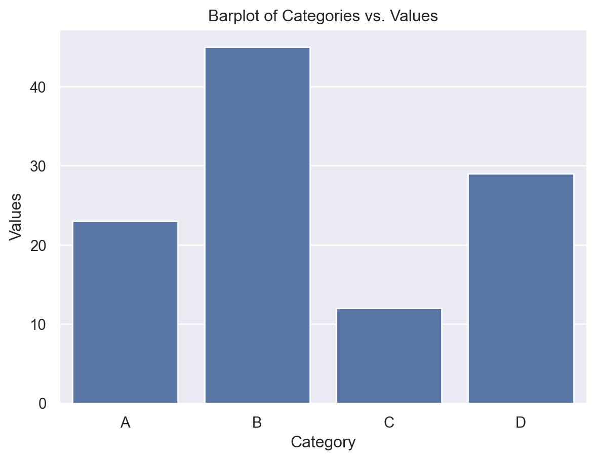
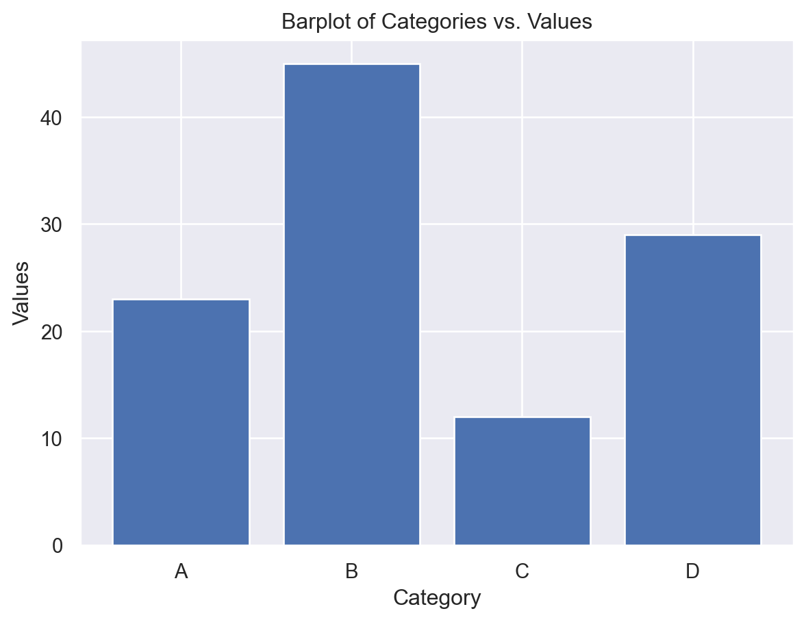
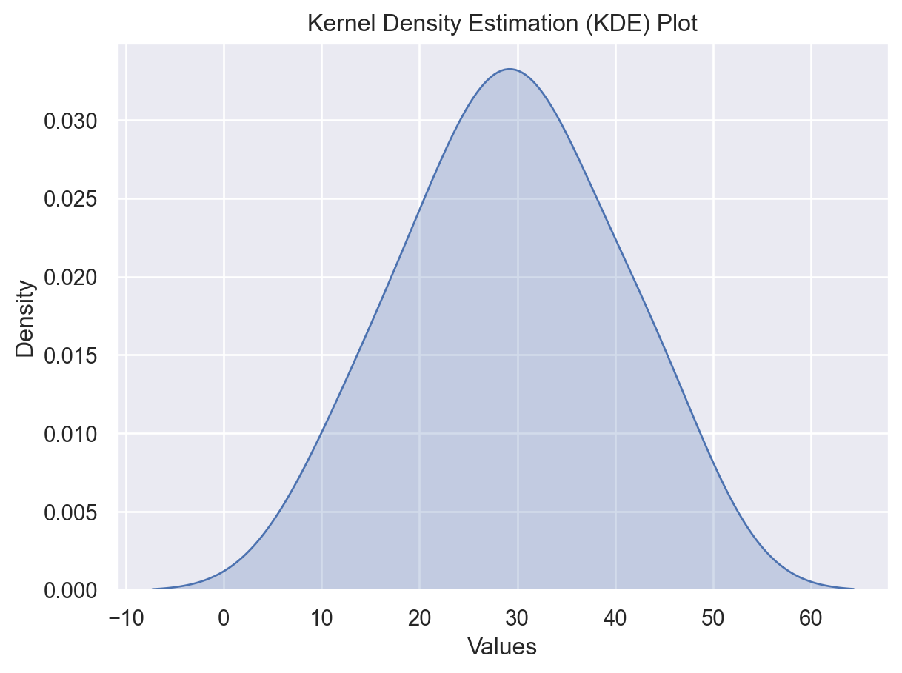

import numpy as np
import pandas as pd
import matplotlib.pyplot as plt
import seaborn as sns
import sklearn.metrics as Metrics
import folium #needed for interactive map
from folium.plugins import HeatMap
from collections import Counter
from sklearn import preprocessing
from datetime import datetime
from collections import Counter
from math import exp
from sklearn.linear_model import LinearRegression as LinReg
from sklearn.metrics import mean_absolute_error
from sklearn.metrics import median_absolute_error
from sklearn.metrics import r2_score
%matplotlib inline
sns.set()6 Exploratory Data Analysis
This case introduces exploratory data analysis (EDA) on an unfamiliar dataset. Here, we learned how to systematically approach investigating an unknown dataset while maintaining creativity to look for insights. Exploratory data analysis is an essential data analysis step and should never be skipped.
6.1 Preliminary modules
6.2 Attributes of the dataset
When loading in a new dataset it is important to answer the following questions:
- What is the size of the dataset?
- Potentially useful Python attributes/methods:
shape
- Potentially useful Python attributes/methods:
- What are the important columns to my research question?
- Potentially useful Python attributes/methods:
.columns, .head(), .index
- Potentially useful Python attributes/methods:
- What does the data look like in these columns? Is it clean? What are the unique values?
- Potentially useful Python attributes/methods:
.head(), .unique(), .isnull()
- Potentially useful Python attributes/methods:
- How many missing values are there? How are they coded?
- Potentially useful Python attributes/methods:
.isnull(), .dropna(), .isnull().sum()
- Potentially useful Python attributes/methods:
- Do I need to create new columns?
- Potentially useful Python attributes/methods:
.apply()
- Potentially useful Python attributes/methods:
6.3 Assessing variables individually
Once our dataset is clean and we have identified the important variables, then we can investigate the distributions of the important variables in isolation. This helps identify anything “odd” going on in our data, helps us understand what the dataset looks like, and helps us understand the properties of each of the variables (location, spread, skewness, tails).
One way to do this is through printing summary statistics. Potentially useful Python attributes/methods: .describe(), .value_counts(), .mean(), .quantile(), .std(), .median() - See Data extraction and transformation for more.
We can also make one-dimensional charts - bar charts, histograms and boxplots - to assess each variate. Potentially useful Python attributes/methods: .hist(), .barplot(), .boxplot(), .bar() - See the plots covered in the previous cases for more.
6.3.1 Barplots
Barplots provide a way to summarize a categorical column or variable. Each bar displays the number of occurences of each category. Sometimes, when one category has most of the responses, it is useful to instead set the height of the bar to be the proportion of the responses attributed to each category.
Example:
- Seaborn: Use
sns.barplot()for creating bar plots with a high-level, statistical focus. - Matplotlib: Use
plt.bar()for more basic bar plots and lower-level control over plot elements.
Here is an example of how to use Seaborn’s .barplot() function:
# Sample DataFrame
data = {
'Category': ['A', 'B', 'C', 'D'],
'Values': [23, 45, 12, 29]
}
df = pd.DataFrame(data)
# Create a barplot
sns.barplot(x='Category', y='Values', data=df)
plt.title('Barplot of Categories vs. Values')
plt.show()
While .barplot() is specific to Seaborn, Matplotlib provides similar functionality through the bar() function:
# Sample data
categories = ['A', 'B', 'C', 'D']
values = [23, 45, 12, 29]
# Create a barplot
plt.bar(categories, values)
plt.title('Barplot of Categories vs. Values')
plt.xlabel('Category')
plt.ylabel('Values')
plt.show()
6.4 Relationships between two variables
6.4.1 Investigating relationships between two variables
Once we have sufficient knowledge of the single variable distributions, known as the univariate distributions, we can inspect relationships between variables. Sometimes, it is too much to look at each pair of variables, so our overall research question(s) should guide which relationships we investigate. Here, to compare continuous to categorical variables, we can use boxplots, and to compare two continuous variables, we can use scatterplots or line plots. Potentially useful Python attributes/methods: .relplot(), .boxplot() - See the plots covered in the previous cases for more.
We can also use the correlation (see below) between two continuous variates. Note that when a correlation does not match with our intution, there may be an interaction effect, and we should investigate three-way relationships with these variables.
On the plots, we should be looking for how the mean/median, scale, skewness and outliers of one variate changes with respect to the other. Take note of any interesting patterns. If we see something unusual or unexpected, then we should investigate further to explain it. This will also help in the future, when we use staitsitcal/machine learning models on the data. Having a good knowledge of what the dataset looks like will help you build better models, and identify problems with your models.
6.4.2 Correlation
Correlation is a statistical measure that describes the strength and direction of a relationship between two variables. Correlation tells us how closely two variables move together. When two variables are correlated, knowing the value of one variable helps you predict the value of the other. Correlation falls on a scale of -1 to 1. There are two main types of correlation:
Positive Correlation: This occurs when two variables tend to increase or decrease together. If one variable increases, the other variable also tends to increase. Conversely, if one decreases, the other tends to decrease.
Negative Correlation: This occurs when one variable tends to increase as the other decreases, and vice versa. When one variable increases, the other tends to decrease.
Examples:
- Positive Correlation:
- Example: As the number of hours studied increases, test scores tend to increase.
- Example: Higher levels of exercise are correlated with lower levels of obesity.
- Negative Correlation:
- Example: As the temperature decreases, heating costs tend to increase.
- Example: Increased smoking is correlated with a higher incidence of lung cancer.
Pitfalls of Correlation:
Correlation Does Not Imply Causation: Just because two variables are correlated does not mean that one causes the other to change. There may be other factors (confounding variables) influencing both variables.
Non-linear Relationships: Correlation measures only linear relationships. If the relationship between variables is non-linear (e.g., quadratic), correlation may not accurately reflect the strength of the relationship.
Outliers: Extreme values (outliers) can disproportionately influence correlation calculations, leading to misleading results.
Spurious Correlations: Sometimes variables may appear to be correlated by chance, without any meaningful relationship. Care should be taken to analyze whether we have enough sample points to ensure that the computed correlations are useful.
Correlation is a useful measure for understanding relationships between variables. However, it’s important to interpret correlation carefully, considering other factors and potential limitations, to avoid drawing incorrect conclusions.
The relevent python function is DataFrame.corr(). This returns the correlation matrix of the variates in the relevant DataFrame. The correlation matrix is a matrix, whose \(ij\) th entry is the correlation between variable in column \(i\) and column \(j\).
6.5 Relationships between three variables
6.5.1 Location data and folium
Whenever one variable we are interested in is a set of locations, it is useful to use the folium package to create visuals. Please visit this Quickstart guide to learn more about using folium.
6.5.2 Other relationships between three variables
Again, we can use color and/or size to add a third variate to the scatter and boxplots. You can use the hue parameter in the seaborn package to achieve this. This is particularly useful for identifying or investigating interaction effects.
6.5.3 Interaction effects
An interaction effect refers to a situation where the effect of one variable on an outcome depends on the level or value of another variable.
Dependence: An interaction effect means that the relationship between one variable and an outcome (AKA another variable) differs across different levels/values of another, third variable.
A very simple example can be used to explain the definition:
Imagine you have two variables:
- Variable A: Age (Young or Old)
- Variable B: Treatment (New Drug or Placebo)
- Variable C: Overall health (Continuous scale)
An interaction effect between “age” and “treatment” on “overall health” occurs when the effect of “treatment” on the overall health is different depending on whether the patient’s is young or old.
Significance: Finding an interaction effect can change how we interpret the impact of individual variables on outcomes. It suggests that the combined effect of variables is different from what would be predicted by their individual effects alone.
Example:
Let’s say researchers are studying the effect of a new drug on health improvement in both young and old patients. They find that the drug is more effective in younger patients than older patients. This shows a main effect of age on health improvement.
Interaction Effect: However, further analysis reveals that the difference in effectiveness between young and old patients depends on whether they received the drug or a placebo. If the drug has a significantly larger effect on young patients compared to old patients (more than what would be expected from just the main effects of age and treatment), then we say there is an interaction effect between age and treatment.
Example:
Imagine we have a study on the effectiveness of a new teaching method (Variable A) on student performance (Outcome), where we also consider the student’s prior knowledge (Variable B). If the teaching method is more effective for students with high prior knowledge but less effective for students with low prior knowledge, then there is an interaction effect between teaching method and prior knowledge.
6.5.4 Kernel density plots
We learned a new plot, called the kernel density plot. This is a smoothed version of the histogram. The bandwidth parameter controls the smoothness of the resulting KDE plot. Kernel density plots are useful to compare the distributions of two or more different samples, as they can be nicely overlaid. They also look nicer than a histogram.
Example:
To create a kernel density plot, use the sns.kdeplot() function.
# Sample data
data = pd.Series([23, 45, 12, 29, 30, 35, 42, 18, 25, 33])
# Create a KDE plot with Seaborn
sns.kdeplot(data, shade=True)
plt.title('Kernel Density Estimation (KDE) Plot')
plt.xlabel('Values')
plt.ylabel('Density')
plt.show()C:\Users\12RAM\AppData\Local\Temp\ipykernel_24672\850350042.py:5: FutureWarning:
`shade` is now deprecated in favor of `fill`; setting `fill=True`.
This will become an error in seaborn v0.14.0; please update your code.

Explanation of the Code:
sns.kdeplot(): This function plots the KDE of the given data.data: The input data for which the KDE plot will be generated. It can be a Pandas Series, NumPy array, or a list.shade=True: Adds shading beneath the KDE curve for better visualization.
plt.title(),plt.xlabel(),plt.ylabel(): These functions from Matplotlib are used to add a title, x-axis label, and y-axis label to the plot, respectively.
Additional Options:
Adjusting Bandwidth: You can adjust the bandwidth of the KDE plot using the
bw_adjustparameter insns.kdeplot(). Lower values result in a smoother plot, while higher values result in a more jagged plot.Multiple Plots:
sns.kdeplot()can also be used to plot KDEs for multiple variables or groups by passing multiple datasets or using thehueparameter.